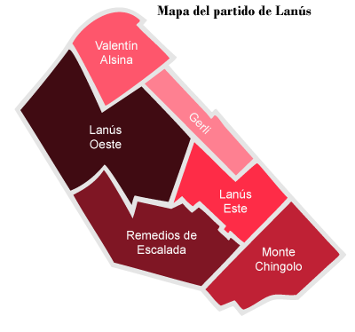

Urbanismo y Territorio
Distribución por Localidades

Lanús se divide en seis localidades principales:
- Lanús Oeste: Es la más extensa, ocupando el 30% de la superficie total.
- Remedios de Escalada: Representa el 21% del territorio.
- Monte Chingolo: Ocupa el 16% del municipio.
- Lanús Este: Representa el 13% de la superficie.
- Valentín Alsina: Equivale al 12% del total.
- Gerli: Es la localidad más pequeña con el 8% de la superficie.
Barrios Destacados:
Entre sus 41 barrios se encuentran Villa Caraza, Villa Diamante, Villa Obrera, Villa Jardín, Villa Mauricio y el centro de Lanús.